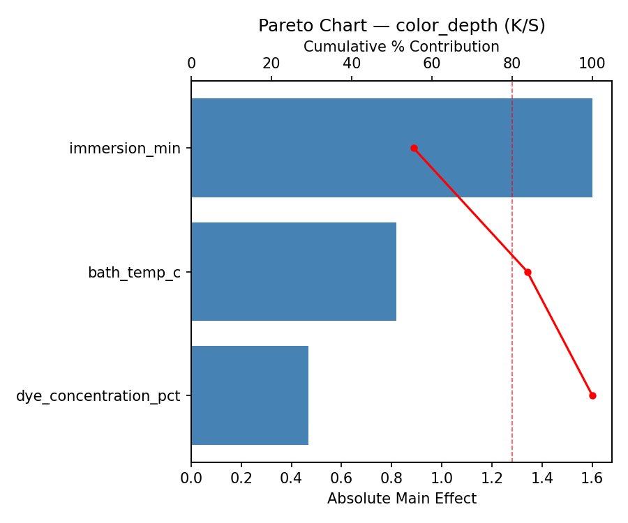
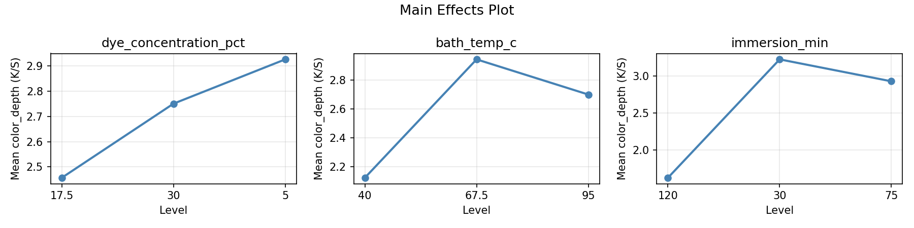
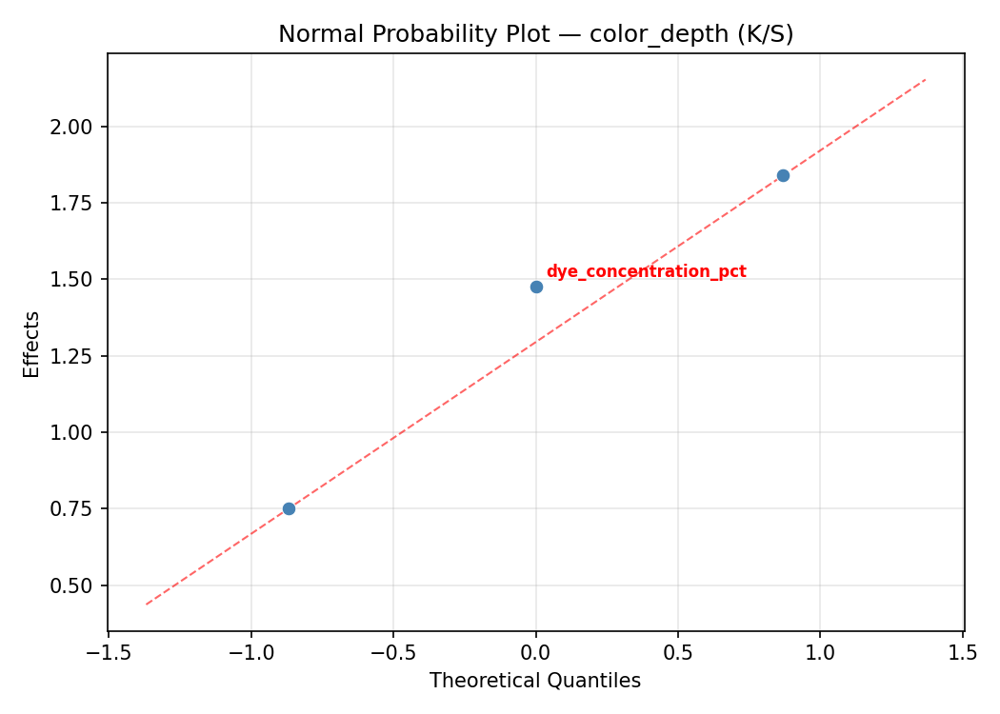
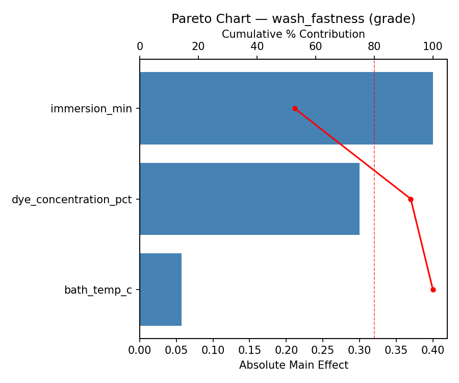
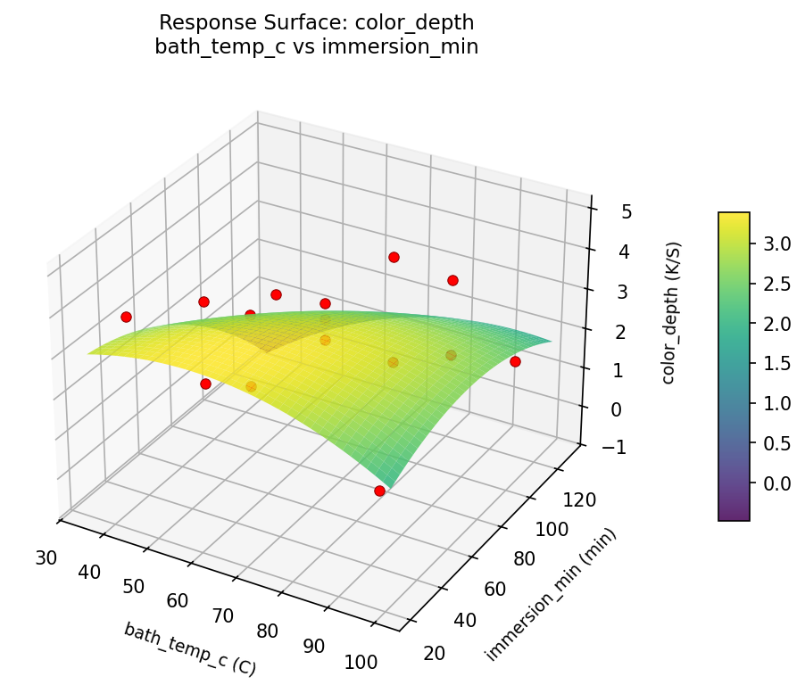
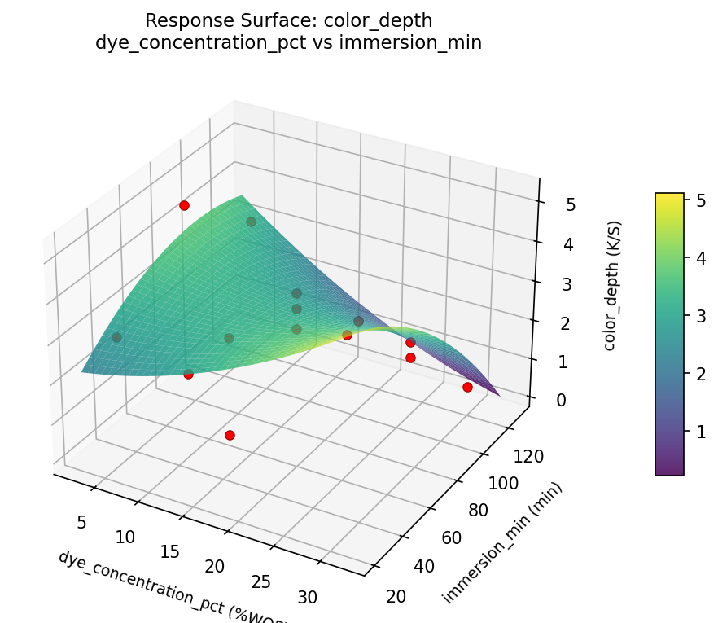
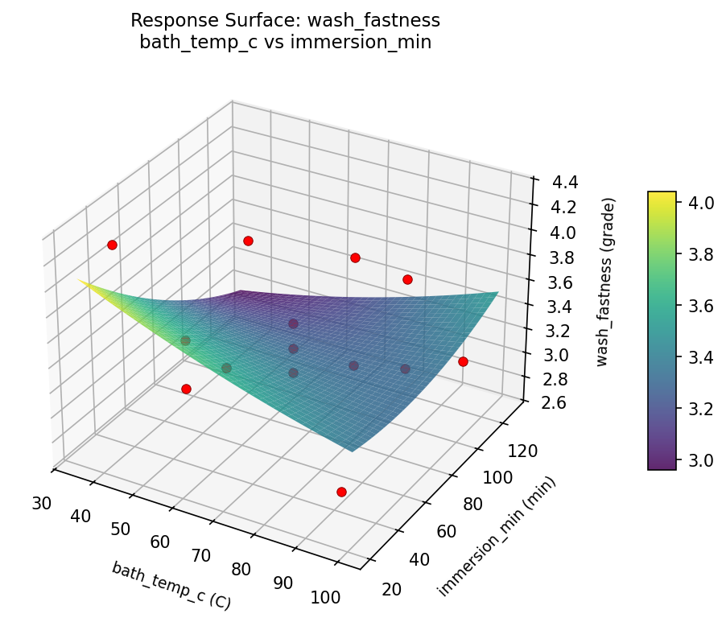
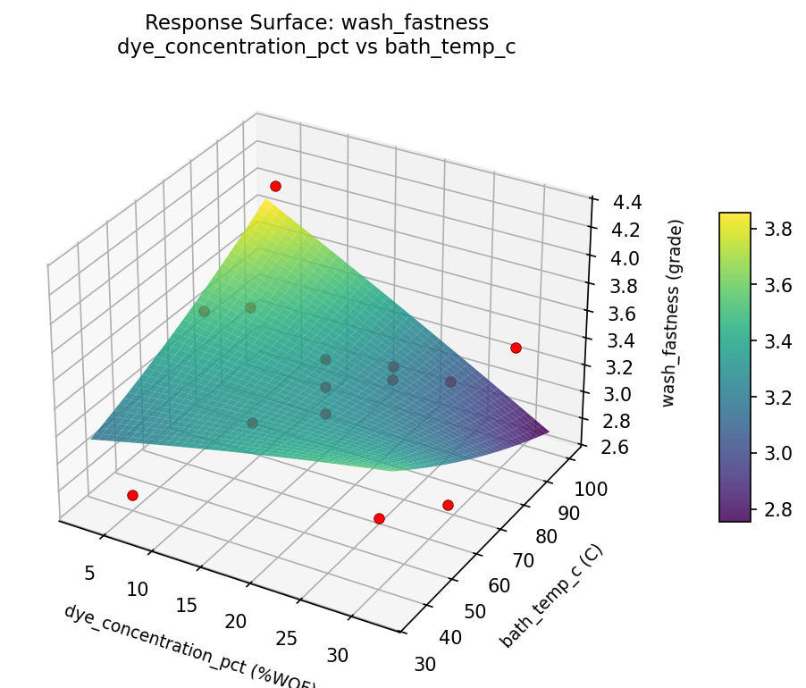
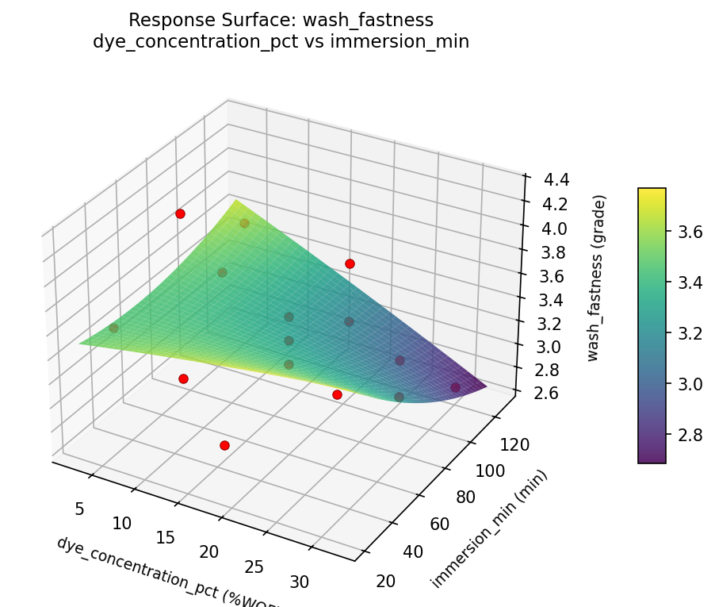

Summary
This experiment investigates natural fabric dyeing. Box-Behnken design to maximize color depth and wash fastness by tuning dye concentration, bath temperature, and immersion time.
The design varies 3 factors: dye concentration pct (%WOF), ranging from 5 to 30, bath temp c (C), ranging from 40 to 95, and immersion min (min), ranging from 30 to 120. The goal is to optimize 2 responses: color depth (K/S) (maximize) and wash fastness (grade) (maximize). Fixed conditions held constant across all runs include fabric = cotton_muslin, mordant = alum.
A Box-Behnken design was chosen because it efficiently fits quadratic models with 3 continuous factors while avoiding extreme corner combinations — requiring only 15 runs instead of the 8 needed for a full factorial at two levels.
Quadratic response surface models were fitted to capture potential curvature and factor interactions. The RSM contour plots below visualize how pairs of factors jointly affect each response.
Key Findings
For color depth, the most influential factors were bath temp c (48.7%), immersion min (42.5%), dye concentration pct (8.8%). The best observed value was 4.9 (at dye concentration pct = 5, bath temp c = 67.5, immersion min = 120).
For wash fastness, the most influential factors were bath temp c (51.6%), immersion min (28.1%), dye concentration pct (20.3%). The best observed value was 4.3 (at dye concentration pct = 30, bath temp c = 67.5, immersion min = 120).
Recommended Next Steps
- Run confirmation experiments at the predicted optimal settings to validate the model.
- Consider whether any fixed factors should be varied in a future study.
Experimental Setup
Factors
| Factor | Low | High | Unit |
|---|
dye_concentration_pct | 5 | 30 | %WOF |
bath_temp_c | 40 | 95 | C |
immersion_min | 30 | 120 | min |
Fixed: fabric = cotton_muslin, mordant = alum
Responses
| Response | Direction | Unit |
|---|
color_depth | ↑ maximize | K/S |
wash_fastness | ↑ maximize | grade |
Configuration
{
"metadata": {
"name": "Natural Fabric Dyeing",
"description": "Box-Behnken design to maximize color depth and wash fastness by tuning dye concentration, bath temperature, and immersion time"
},
"factors": [
{
"name": "dye_concentration_pct",
"levels": [
"5",
"30"
],
"type": "continuous",
"unit": "%WOF"
},
{
"name": "bath_temp_c",
"levels": [
"40",
"95"
],
"type": "continuous",
"unit": "C"
},
{
"name": "immersion_min",
"levels": [
"30",
"120"
],
"type": "continuous",
"unit": "min"
}
],
"fixed_factors": {
"fabric": "cotton_muslin",
"mordant": "alum"
},
"responses": [
{
"name": "color_depth",
"optimize": "maximize",
"unit": "K/S"
},
{
"name": "wash_fastness",
"optimize": "maximize",
"unit": "grade"
}
],
"settings": {
"operation": "box_behnken",
"test_script": "use_cases/177_fabric_dyeing/sim.sh"
}
}
Experimental Matrix
The Box-Behnken Design produces 15 runs. Each row is one experiment with specific factor settings.
| Run | dye_concentration_pct | bath_temp_c | immersion_min |
|---|
| 1 | 17.5 | 40 | 30 |
| 2 | 17.5 | 67.5 | 75 |
| 3 | 30 | 67.5 | 120 |
| 4 | 30 | 67.5 | 30 |
| 5 | 17.5 | 67.5 | 75 |
| 6 | 17.5 | 67.5 | 75 |
| 7 | 5 | 67.5 | 120 |
| 8 | 30 | 40 | 75 |
| 9 | 17.5 | 40 | 120 |
| 10 | 30 | 95 | 75 |
| 11 | 5 | 67.5 | 30 |
| 12 | 17.5 | 95 | 120 |
| 13 | 5 | 40 | 75 |
| 14 | 5 | 95 | 75 |
| 15 | 17.5 | 95 | 30 |
Step-by-Step Workflow
1
Preview the design
$ python doe.py info --config use_cases/177_fabric_dyeing/config.json
2
Generate the runner script
$ python doe.py generate --config use_cases/177_fabric_dyeing/config.json \
--output use_cases/177_fabric_dyeing/results/run.sh --seed 42
3
Execute the experiments
$ bash use_cases/177_fabric_dyeing/results/run.sh
4
Analyze results
$ python doe.py analyze --config use_cases/177_fabric_dyeing/config.json
5
Get optimization recommendations
$ python doe.py optimize --config use_cases/177_fabric_dyeing/config.json
6
Multi-objective optimization
With 2 competing responses, use --multi to find the best compromise via Derringer–Suich desirability.
$ python doe.py optimize --config use_cases/177_fabric_dyeing/config.json --multi
7
Generate the HTML report
$ python doe.py report --config use_cases/177_fabric_dyeing/config.json \
--output use_cases/177_fabric_dyeing/results/report.html
Features Exercised
| Feature | Value |
|---|
| Design type | box_behnken |
| Factor types | continuous (all 3) |
| Arg style | double-dash |
| Responses | 2 (color_depth ↑, wash_fastness ↑) |
| Total runs | 15 |
Analysis Results
Generated from actual experiment runs using the DOE Helper Tool.
Response: color_depth
Top factors: bath_temp_c (48.7%), immersion_min (42.5%), dye_concentration_pct (8.8%).
ANOVA
| Source | DF | SS | MS | F | p-value |
|---|
| Source | DF | SS | MS | F | p-value |
| dye_concentration_pct | 2 | 0.2524 | 0.1262 | 1.515 | 0.2768 |
| bath_temp_c | 2 | 7.6717 | 3.8359 | 46.030 | 0.0000 |
| immersion_min | 2 | 6.6989 | 3.3494 | 40.193 | 0.0001 |
| Lack | of | Fit | 6 | 10.8663 | 1.8111 |
| Pure | Error | 2 | 0.1667 | | |
| Error | 8 | 11.0330 | 0.0833 | | |
| Total | 14 | 25.6560 | 1.8326 | | |
Pareto Chart

Main Effects Plot

Normal Probability Plot of Effects

Half-Normal Plot of Effects

Model Diagnostics

Response: wash_fastness
Top factors: bath_temp_c (51.6%), immersion_min (28.1%), dye_concentration_pct (20.3%).
ANOVA
| Source | DF | SS | MS | F | p-value |
|---|
| Source | DF | SS | MS | F | p-value |
| dye_concentration_pct | 2 | 0.1914 | 0.0957 | 2.208 | 0.1724 |
| bath_temp_c | 2 | 1.2239 | 0.6119 | 14.121 | 0.0024 |
| immersion_min | 2 | 0.3742 | 0.1871 | 4.318 | 0.0535 |
| Lack | of | Fit | 6 | 1.1199 | 0.1867 |
| Pure | Error | 2 | 0.0867 | | |
| Error | 8 | 1.2066 | 0.0433 | | |
| Total | 14 | 2.9960 | 0.2140 | | |
Pareto Chart

Main Effects Plot

Normal Probability Plot of Effects

Half-Normal Plot of Effects

Model Diagnostics

Response Surface Plots
3D surfaces fitted with quadratic RSM. Red dots are observed data points.
color depth bath temp c vs immersion min

color depth dye concentration pct vs bath temp c

color depth dye concentration pct vs immersion min

wash fastness bath temp c vs immersion min

wash fastness dye concentration pct vs bath temp c

wash fastness dye concentration pct vs immersion min

Multi-Objective Optimization
When responses compete, Derringer–Suich desirability finds the best compromise.
Each response is scaled to a 0–1 desirability, then combined via a weighted geometric mean.
Overall Desirability
D = 0.8846
Per-Response Desirability
| Response | Weight | Desirability | Predicted | Dir |
|---|
color_depth |
1.0 |
|
4.90 0.9545 4.90 K/S |
↑ |
wash_fastness |
1.5 |
|
4.10 0.8409 4.10 grade |
↑ |
Recommended Settings
| Factor | Value |
|---|
dye_concentration_pct | 17.5 %WOF |
bath_temp_c | 95 C |
immersion_min | 120 min |
Source: from observed run #10
Trade-off Summary
Sacrifice = how much worse than single-objective best.
| Response | Predicted | Best Observed | Sacrifice |
|---|
wash_fastness | 4.10 | 4.30 | +0.20 |
Top 3 Runs by Desirability
| Run | D | Factor Settings |
|---|
| #12 | 0.8562 | dye_concentration_pct=5, bath_temp_c=95, immersion_min=75 |
| #3 | 0.6787 | dye_concentration_pct=17.5, bath_temp_c=67.5, immersion_min=75 |
Model Quality
| Response | R² | Type |
|---|
wash_fastness | 0.7430 | quadratic |
Full Multi-Objective Output
============================================================
MULTI-OBJECTIVE OPTIMIZATION
Method: Derringer-Suich Desirability Function
============================================================
Overall desirability: D = 0.8846
Response Weight Desirability Predicted Direction
---------------------------------------------------------------------
color_depth 1.0 0.9545 4.90 K/S ↑
wash_fastness 1.5 0.8409 4.10 grade ↑
Recommended settings:
dye_concentration_pct = 17.5 %WOF
bath_temp_c = 95 C
immersion_min = 120 min
(from observed run #10)
Trade-off summary:
color_depth: 4.90 (best observed: 4.90, sacrifice: +0.00)
wash_fastness: 4.10 (best observed: 4.30, sacrifice: +0.20)
Model quality:
color_depth: R² = 0.8060 (quadratic)
wash_fastness: R² = 0.7430 (quadratic)
Top 3 observed runs by overall desirability:
1. Run #10 (D=0.8846): dye_concentration_pct=17.5, bath_temp_c=95, immersion_min=120
2. Run #12 (D=0.8562): dye_concentration_pct=5, bath_temp_c=95, immersion_min=75
3. Run #3 (D=0.6787): dye_concentration_pct=17.5, bath_temp_c=67.5, immersion_min=75
Full Analysis Output
=== Main Effects: color_depth ===
Factor Effect Std Error % Contribution
--------------------------------------------------------------
bath_temp_c 1.7286 0.3495 48.7%
immersion_min 1.5071 0.3495 42.5%
dye_concentration_pct 0.3107 0.3495 8.8%
=== ANOVA Table: color_depth ===
Source DF SS MS F p-value
-----------------------------------------------------------------------------
dye_concentration_pct 2 0.2524 0.1262 1.515 0.2768
bath_temp_c 2 7.6717 3.8359 46.030 0.0000
immersion_min 2 6.6989 3.3494 40.193 0.0001
Lack of Fit 6 10.8663 1.8111 21.733 0.0446
Pure Error 2 0.1667 0.0833
Error 8 11.0330 0.0833
Total 14 25.6560 1.8326
=== Summary Statistics: color_depth ===
dye_concentration_pct:
Level N Mean Std Min Max
------------------------------------------------------------
17.5 7 2.7857 1.1964 1.4000 4.9000
30 4 2.6250 1.9397 0.6000 4.7000
5 4 2.4750 1.3574 0.5000 3.5000
bath_temp_c:
Level N Mean Std Min Max
------------------------------------------------------------
40 4 3.8000 0.8042 3.0000 4.9000
67.5 7 2.0714 1.2079 0.5000 3.2000
95 4 2.5500 1.5588 1.4000 4.7000
immersion_min:
Level N Mean Std Min Max
------------------------------------------------------------
120 4 1.8500 2.0728 0.5000 4.9000
30 4 2.2500 0.9849 1.4000 3.2000
75 7 3.3571 0.7254 2.6000 4.7000
=== Main Effects: wash_fastness ===
Factor Effect Std Error % Contribution
--------------------------------------------------------------
bath_temp_c 0.6821 0.1194 51.6%
immersion_min 0.3714 0.1194 28.1%
dye_concentration_pct 0.2679 0.1194 20.3%
=== ANOVA Table: wash_fastness ===
Source DF SS MS F p-value
-----------------------------------------------------------------------------
dye_concentration_pct 2 0.1914 0.0957 2.208 0.1724
bath_temp_c 2 1.2239 0.6119 14.121 0.0024
immersion_min 2 0.3742 0.1871 4.318 0.0535
Lack of Fit 6 1.1199 0.1867 4.307 0.2004
Pure Error 2 0.0867 0.0433
Error 8 1.2066 0.0433
Total 14 2.9960 0.2140
=== Summary Statistics: wash_fastness ===
dye_concentration_pct:
Level N Mean Std Min Max
------------------------------------------------------------
17.5 7 3.4429 0.3823 2.9000 4.1000
30 4 3.4000 0.7071 2.7000 4.3000
5 4 3.1750 0.3775 2.7000 3.6000
bath_temp_c:
Level N Mean Std Min Max
------------------------------------------------------------
40 4 3.8250 0.4573 3.3000 4.3000
67.5 7 3.1429 0.3690 2.7000 3.6000
95 4 3.2750 0.3304 2.9000 3.6000
immersion_min:
Level N Mean Std Min Max
------------------------------------------------------------
120 4 3.1000 0.6733 2.7000 4.1000
30 4 3.4250 0.2872 3.0000 3.6000
75 7 3.4714 0.4112 3.1000 4.3000
Optimization Recommendations
=== Optimization: color_depth ===
Direction: maximize
Best observed run: #10
dye_concentration_pct = 5
bath_temp_c = 67.5
immersion_min = 120
Value: 4.9
RSM Model (linear, R² = 0.2281, Adj R² = 0.0176):
Coefficients:
intercept +2.6600
dye_concentration_pct -0.8375
bath_temp_c +0.1500
immersion_min -0.0875
RSM Model (quadratic, R² = 0.8472, Adj R² = 0.5723):
Coefficients:
intercept +1.5333
dye_concentration_pct -0.8375
bath_temp_c +0.1500
immersion_min -0.0875
dye_concentration_pct*bath_temp_c -0.2500
dye_concentration_pct*immersion_min +0.0250
bath_temp_c*immersion_min +0.3500
dye_concentration_pct^2 +1.0958
bath_temp_c^2 -0.5792
immersion_min^2 +1.5958
Curvature analysis:
immersion_min coef=+1.5958 convex (has a minimum)
dye_concentration_pct coef=+1.0958 convex (has a minimum)
bath_temp_c coef=-0.5792 concave (has a maximum)
Notable interactions:
bath_temp_c*immersion_min coef=+0.3500 (synergistic)
Predicted optimum (from quadratic model, at observed points):
dye_concentration_pct = 5
bath_temp_c = 67.5
immersion_min = 30
Predicted value: 5.1750
Surface optimum (via L-BFGS-B, quadratic model):
dye_concentration_pct = 5
bath_temp_c = 85.3058
immersion_min = 120
Predicted value: 5.1928
Model quality: Good fit — general trends are captured, some noise remains.
Factor importance:
1. dye_concentration_pct (effect: 1.9, contribution: 42.0%)
2. immersion_min (effect: 1.6, contribution: 37.2%)
3. bath_temp_c (effect: 0.9, contribution: 20.8%)
=== Optimization: wash_fastness ===
Direction: maximize
Best observed run: #12
dye_concentration_pct = 30
bath_temp_c = 67.5
immersion_min = 120
Value: 4.3
RSM Model (linear, R² = 0.1836, Adj R² = -0.0391):
Coefficients:
intercept +3.3600
dye_concentration_pct -0.1750
bath_temp_c +0.1250
immersion_min +0.1500
RSM Model (quadratic, R² = 0.6379, Adj R² = -0.0140):
Coefficients:
intercept +3.1000
dye_concentration_pct -0.1750
bath_temp_c +0.1250
immersion_min +0.1500
dye_concentration_pct*bath_temp_c -0.1250
dye_concentration_pct*immersion_min +0.1250
bath_temp_c*immersion_min +0.0250
dye_concentration_pct^2 +0.3125
bath_temp_c^2 -0.2375
immersion_min^2 +0.4125
Curvature analysis:
immersion_min coef=+0.4125 convex (has a minimum)
dye_concentration_pct coef=+0.3125 convex (has a minimum)
bath_temp_c coef=-0.2375 concave (has a maximum)
Predicted optimum (from quadratic model, at observed points):
dye_concentration_pct = 5
bath_temp_c = 67.5
immersion_min = 120
Predicted value: 4.0250
Surface optimum (via L-BFGS-B, quadratic model):
dye_concentration_pct = 5
bath_temp_c = 83.4211
immersion_min = 120
Predicted value: 4.1046
Model quality: Moderate fit — use predictions directionally, not precisely.
Factor importance:
1. immersion_min (effect: 0.6, contribution: 38.5%)
2. dye_concentration_pct (effect: 0.5, contribution: 32.8%)
3. bath_temp_c (effect: 0.4, contribution: 28.6%)